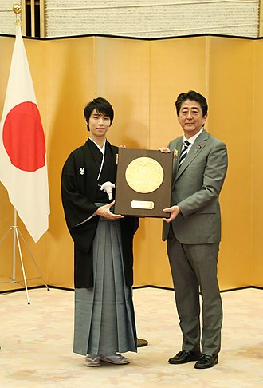

- Jaunākais vienslidotājs, kurš izcīnījis medaļu Četru kontinentu daiļslidošanas čempionātā (16 gadi, 2 mēneši un 12 dienas)

- Jaunākais Japānas vīrietis, kurš izcīnījis medaļu Pasaules daiļslidošanas čempionātā (17 gadi, 3 mēneši un 24 dienas)
- Pirmais slidotājs, kurš īsajā programmā pārspējis 100 punktus(2014.gada olimpiskās spēles)
- Pirmais Āzijas vīrietis, kurš uzvarējis olimpiskajās spēlēs, un jaunākais kopš Dika Batona 1948. gadā (19 gadi, 2 mēneši un 7 dienas)
- Pirmais aziāts un vienīgais slidotājs, kas tajā pašā sezonā uzvarējis olimpiskajās spēlēs, pasaules čempionātos un Grand Prix finālā
- Pirmais un vienīgais slidotājs visās disciplīnās, kas tajā pašā kalendārajā gadā uzvarējis ziemas olimpiskajās spēlēs un Grand Prix finālā
- Pirmais slidotājs, kurš pārspējis 200 punktus brīvajā slidojumā un 300 punktus kombinētajā kopvērtējumā
- Pirmais viens slidotājs un vienīgais slidotājs kurš četras reizes pēc kārtas uzvarējis Grand Prix finālā
- Pirmais Āzijas vīrietis, kurš izcīnījis vairākus pasaules čempiona titulus
- Pirmais vīrietis vienslidotājs 66 gadu laikā kopš Dika Batona, kurš divreiz (pēc kārtas) ieguvis olimpisko titulu
- Pirmā viena slidotāja, kas pasaules rangā ieņem pirmo vietu piecas sezonas pēc kārtas
- Jauns rekords lielākajai uzvaras starpībai Grand Prix sērijā par 59,82 punktiem. Hanju pieder iepriekšējais rekords 55,97 punkti, ko viņš sasniedza 2015. gada NHK Trophy.
- Pirmais viens vīrietis, kurš sasniedzis Super Slam, uzvarot visus pieejamos galvenos starptautiskos senioru un junioru titulus
- Otrais un vienīgais viens vīrietis pēc Jana Hofmaņa, kurš pēckara periodā (pēc 1946. gada) izcīnījis septiņas pasaules čempionāta medaļas
- Pirmais slidotājs vēsturē, kurš sacensībās veiksmīgi veicis četrkāršu loopu
- Pirmais slidotājs, kurš brīvās slidošanas programmas otrajā pusē veiksmīgi veicis trīs četrkāršus lēcienus
- Nozemējot četrkāršo Lutz ar pozitīvu izpildījuma pakāpi, Hanju ir debitējis četru veidu četrkāršos lēcienos starptautiskās sacensībās ar 100% panākumu līmeni.
- Pirmais slidotājs vēsturē, kurš sacensībās nozemēja četrkārš loopu un trīskāršo Aksela kombināciju
- Pirmais slidotājs vēsturē, kurš sacensībās veiksmīgi nozemēja četrkāršā loopa, Eilera un trīskāršā flipa kombināciju.
- Hanju ieguva savu 50. trīskāršā Axeļa lēcienu ar pozitīvu GOE savā 51. starptautiskajā senioru īsajā programmā.
Apbalvojumi
- Tautas goda balva
- Japānas Goda medaļas
- Kikuchi Kan balva
- Laureus Pasaules sporta balvas
- Starptautiskā slidošanas savienība (ISU) "Visvērtīgākais slidotājs"
- JOC kauss (vērtīgākā spēlētāja balva)
- Azusa Ono piemiņas balva
- Absolventu asociācijas Toukon balva
| |